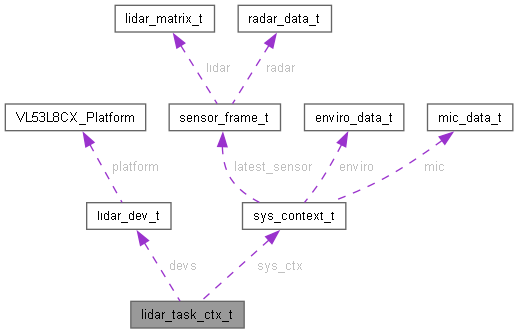

- Generated by
 1.14.0
1.14.0
|
LexaCare V1 — Firmware ESP32-S3 v1.0
Système de détection de chute par LIDAR et Radar
|

Data Fields | |
| lidar_dev_t | devs [LIDAR_NUM_TOTAL] |
| sys_context_t * | sys_ctx |
Definition at line 94 of file lidar_driver.c.
| lidar_dev_t lidar_task_ctx_t::devs[LIDAR_NUM_TOTAL] |
Definition at line 95 of file lidar_driver.c.
Referenced by task_sensor_acq().
| sys_context_t* lidar_task_ctx_t::sys_ctx |
Definition at line 96 of file lidar_driver.c.
Referenced by lidar_driver_start(), and task_sensor_acq().